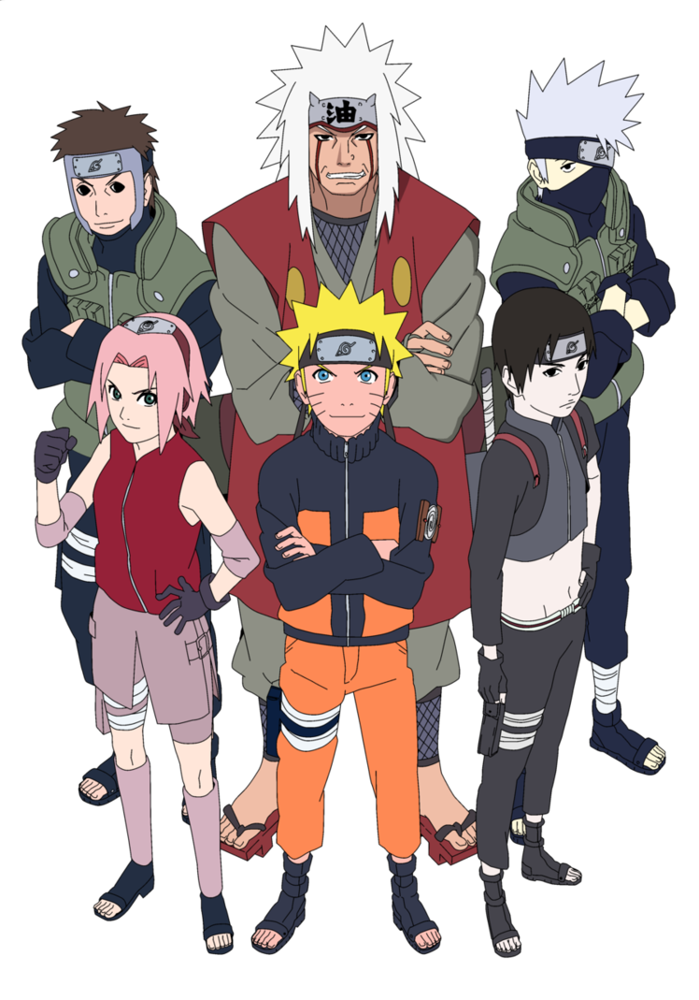
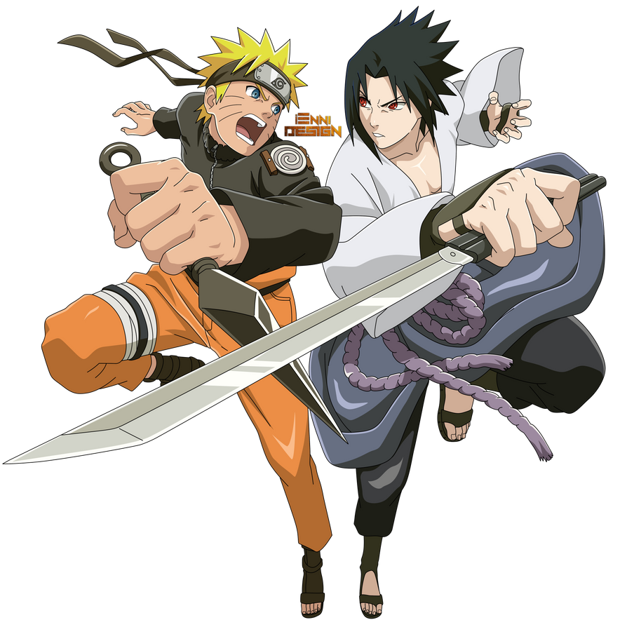
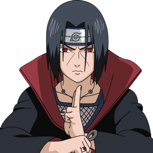
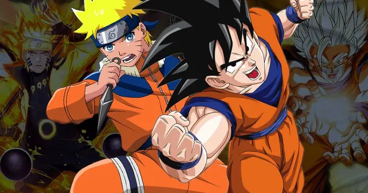
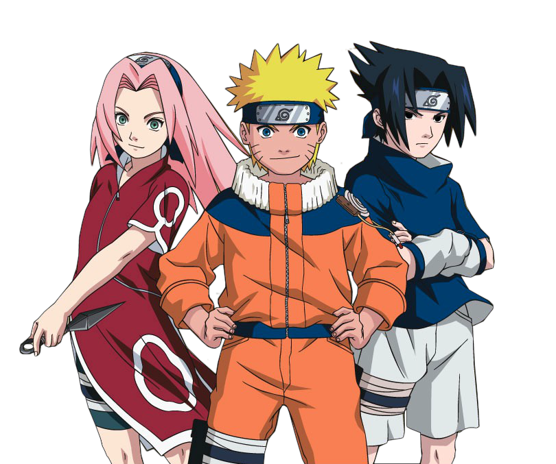
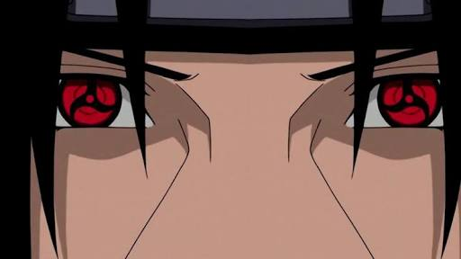
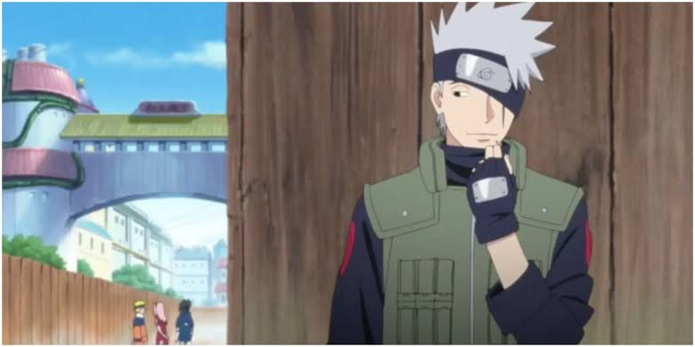
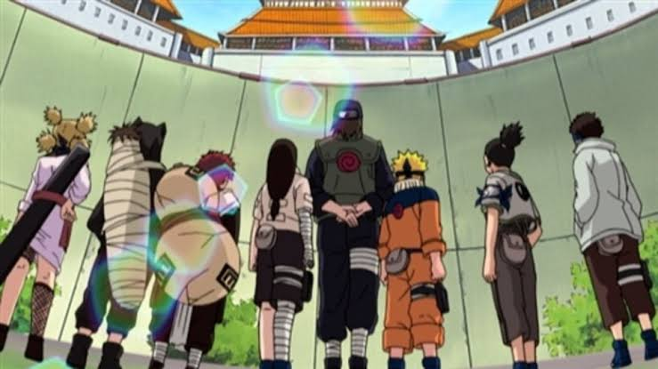

No vasto universo da animação japonesa, poucas séries conseguiram deixar uma marca tão profunda e duradoura quanto "Naruto". Criado por Masashi Kishimoto, o mundo dos ninjas cativou fãs em todo o mundo com sua emocionante narrativa, personagens cativantes e técnicas de combate únicas. Enquanto acompanhamos a jornada de Naruto Uzumaki e seus companheiros em busca de seus sonhos e do reconhecimento da vila, muitos detalhes interessantes e curiosidades estão escondidos nos bastidores. Neste artigo, exploraremos dez curiosidades fascinantes sobre o "Naruto" clássico, revelando os segredos por trás dos nomes dos personagens, referências culturais e até mesmo conexões surpreendentes entre a série e a realidade. Aventure-se conosco nessa jornada pelos aspectos menos conhecidos desse icônico anime.
1- Origem do nome
Origem do Nome: O nome "Naruto" deriva de um tipo de tempura japonesa que inclui peixe enrolado em uma folha de alga marinha, fazendo referência à comida favorita do protagonista, Naruto Uzumaki.
2- Numero 7
A série faz muitas referências ao número 7. Existem sete times de ninjas principais, sete membros na equipe de Kakashi e o Sete Caudas, também conhecido como Gyūki.
3- Nomes dos Personagens
Muitos dos nomes dos personagens têm significados ocultos. Por exemplo, "Naruto" pode ser traduzido como "tempestade", enquanto "Sasuke" significa "ajuda rápida". Esses significados muitas vezes refletem as personalidades e os destinos dos personagens.
4- Itachi Uchiha
A idade de Itachi quando ele massacrou o clã Uchiha foi de apenas 13 anos, tornando esse evento ainda mais impactante pela juventude do perpetrador.
5- Influencias
Masashi Kishimoto, o criador de Naruto, foi inspirado por várias outras obras, como "Dragon Ball" de Akira Toriyama e "Ninja Scrolls", um filme japonês de animação.
6- Cores dos Personagens
As cores dos cabelos dos personagens muitas vezes indicam sua personalidade. Por exemplo, o cabelo loiro e arrepiado de Naruto simboliza sua natureza enérgica e otimista.
7- Sharingan
O Sharingan, um poderoso doujutsu, é baseado no Amaterasu, que é uma deusa xintoísta do sol. Isso reflete o poder do Sharingan relacionado ao controle do fogo. 
8- Influencia na Cultura Pop
Naruto tem tido um impacto profundo na cultura pop global. Várias celebridades de diferentes campos, como esportes e música, admitiram ser fãs da série.
9- Kakashi sem Mascara
A grande revelação do rosto de Kakashi aconteceu apenas no final do Naruto clássico, após mais de 300 episódios de especulação.
10- Exame Chunin
O Exame Chunin, uma parte significativa da série, foi inspirado no livro "O Teste" de D.H. Lawrence. Kishimoto se inspirou na ideia de jovens enfrentando desafios difíceis para amadurecerem.
Espero que essas curiosidades tenham acrescentado algo novo ao seu conhecimento sobre Naruto clássico!

.jpeg)